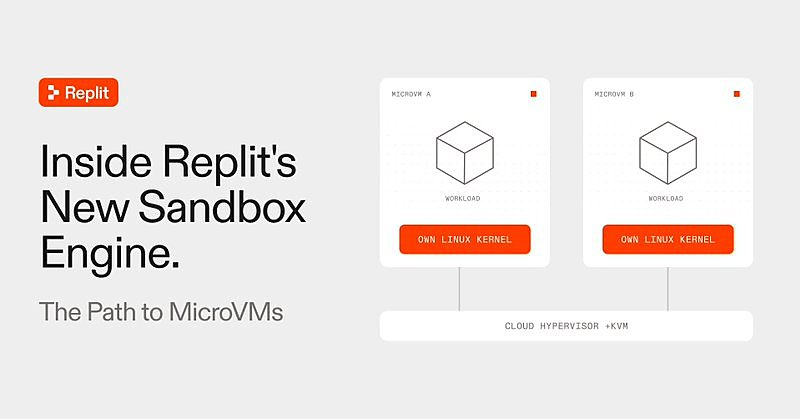

AI 日报 · 11月7日
让 Agent 真正可用：可靠决策、授权上下文与隔离执行
Jev 创始人谈决策模型的可靠性，Box 与 NVIDIA 宣布按权限检索企业内容，Replit 详解微型虚拟机沙箱。Builder 讨论形式化证明与长期运行的 Agent；今日上榜项目覆盖安全审计和企业上下文。
Agent 可靠性
企业上下文
沙箱安全
工程实践
4
Builder 动态
2
今日上榜项目
2
官方原文
1
公开视频
今日要点
Box 与 NVIDIA 于 11 月 5 日宣布 Context Retrieval。
方案结合关键词和语义检索，并按请求者权限返回企业文件中的相关片段。Box 称该检索引擎计划于明年初向 Enterprise Advanced 客户正式提供；其宣传的检索与成本改进是预期值，尚非普遍实测结果。
Replit 于 11 月 4 日详解新版沙箱架构。
每个微型虚拟机有独立 Linux 内核，虚拟化层隔开客户负载和宿主机；网络出口策略在客户虚拟机之外执行。Replit 自述，在审计的 6,211 个 Linux-CNA CVE 中，5,969 个因提前修复或排除受影响代码而避开；这不是所有漏洞的免疫率。
深度对话
Jev 创始人：让模型服务软件的决策环节
Unsupervised Learning 于 11 月 5 日发布对 Jev 创始人 Diogo Almeida 的访谈。以下依据原频道视频及 follow-builders 提供的逐字稿整理，观点属于受访者判断。
把输出对象改成软件可消费的决定
Almeida 认为，很多模型调用最终是供软件继续处理，而不是给人阅读；因此应研究能稳定返回小型结构化决定的模型。
可靠性由应用场景决定
他强调开发者最清楚下游任务需要怎样的稳定性。Jev 仍有局限，团队应清楚说明能力边界，给开发者选择和验证的空间。
警惕只优化榜单
他批评只追逐基准分数会误导缺少时间自行测试的开发者。模型形态容易复制，真实工作流中的效用和可靠性更难建立。
重新审视代码 Agent 的成本约束
他认为许多代码 Agent 的交互设计受 KV cache 效率约束，值得探索不同模型与软件架构的组合；这是未来方向，不是已交付功能。
官方原文
企业检索与执行隔离的两篇原文
Box｜企业内容检索与 NVIDIA 合作
Box 说明混合检索、按权限返回片段和 OpenShell 安全运行环境的合作方向。Context Retrieval 计划明年初正式提供；Nemotron 3 Ultra 已向指定套餐客户开放。
Replit｜新版沙箱从容器走向微型虚拟机
工程团队介绍 Cloud Hypervisor、独立客体内核、宿主侧出口代理与凭据代理。文中披露的 CVE 覆盖数字来自 Replit 自行审计的指定时间窗与数据集。
已检查 feeds.json 四条 RSS，截至 11 月 7 日上午未见当天新条目；同时检查 OpenAI、Anthropic、Google 官方发布页。以下按原文发布日期列出，不将旧内容标成今日新发。
Builder 动态
安全证明、长期任务与授权数据
Thibault Sottiaux｜重新考虑大规模形式化证明
OpenAI 的 Thibault Sottiaux 认为，在新系统设计中考虑对数千万行代码做形式化证明，已不再荒谬。这是他对工程方向的判断，并非已完成的证明规模。
Amjad Masad｜介绍 Replit 沙箱设计
Replit CEO 援引自家工程文章，强调定制内核规避了审计样本中约 96% 的 CVE。原文精确数字为 5,969 / 6,211，包含及时引入上游修复和排除受影响代码；不能理解为对所有 Linux 零日漏洞的阻断率。

Aaron Levie｜企业 Agent 需要授权上下文
Box CEO 认为企业 Agent 的成败取决于能否取得关键资料，并介绍与 NVIDIA 合作的检索方案。他提到的“企业数据九成为非结构化”属于其原帖估计；Box 公告给出了产品范围与上线计划。
Guillermo Rauch｜Agent 的长期任务与调度
Vercel CEO 认为，跨时间持续替用户完成任务是 Agent 的重要用法，并举夜间整理记忆、日后提醒的例子。他称 Vercel Schedules 可在运行时定义并在沙箱外触发计算；这是其产品观点，具体能力仍应按文档验证。
GitHub Trending
可核验的安全审计与企业检索工具


项目取自 11 月 7 日 GitHub Trending（含 Python 分类），并避开近三期已重点介绍的仓库。星标、分叉及语言为本次 GitHub API 快照；功能按 README 描述，未独立测评。
今日思考
Jev 访谈把可靠性落实到软件中的微小决策；Box 让检索遵循已有权限；Replit 把执行环境放进独立内核。三者对应的是同一条工作流里的三个问题：决定是否可信、资料是否有权访问、代码是否被限制在许可范围。今日一问：你的 Agent 在做出决定时，能指出依据、权限和执行边界吗？
今天可做：选一个跨日任务，记录它读取的资料、每一步决定的证据和沙箱允许的网络目标；让一个故意越权的测试任务验证拦截是否生效。
参考来源